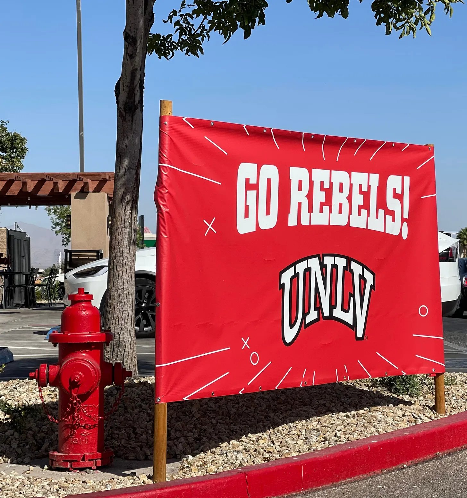

Elevation Change’s No. 4 UNLV (4-2, 2-0) travels to No. 6 Air Force (4-1, 2-1) in a matchup between two of the top rushing offenses in the Mountain West.
Air Force currently sports the second-best rushing offense in the country, just behind fellow service school Army, while UNLV sits at 54th. Both teams sit near the bottom in passing yards per game, with Air Force the absolute worst passing offense in the country.
The Rebels are led by rushing threats Jai’Den Thomas and quarterback Jackson Arnold. Both men have over 300 rushing yards and 90 attempts on the season. Thomas’ 495 rushing yards are 31st-best in the country.

Arnold has also found success through the air, with 1,140 yards and eight touchdowns this season. His propensity to run the ball does open him up to sacks, though. He’s been sacked 16 times this season, tied for the ninth-most in the country.
UNLV is coming off an upset win at home against former Mountain West leader North Dakota State. With the win, the Rebels are now in sole possession of first place in the conference at 2-0. Air Force is playing its fourth Mountain West game of the season, with its lone loss coming at home to the Bison back in Week 2.
The Falcons played Mountain West newcomer Northern Illinois in Week 6 and won in the most Air Force-coded way possible: zero passes completed. The game was the 29th such instance since 2000. The Falcons dominated with over 400 rushing yards and four touchdowns. Running backs Evan Medders and Owen Allen each had at least 100 yards in the win.
Air Force has averaged over 26 points a game at home, but UNLV will be the most well-rounded defense it’s faced this season. The Rebels are led by defensive back Mumu Bin-Wahad, who’s tied for third in the country with three interceptions, and defensive back Tre Fulton, who already has 3.5 sacks, an interception and a forced fumble in his sophomore season.
The Elevation Change model has Air Force as a slight home favorite at −3.1. The over/under sits at 49.3, and our model’s projected score lands just under the total. It should be a good, hard-fought game on both sides, but we’re going with the home team pulling off a narrow victory.
Prediction
- Air Force
- 26
- UNLV
- 23